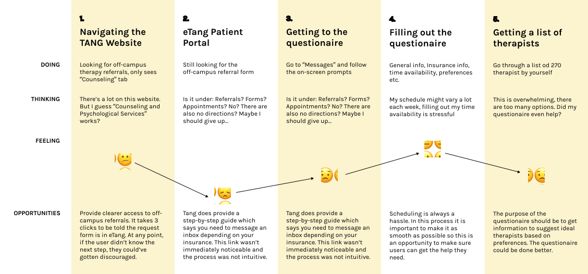

Serotonin / Seeking Long-term Mental Health Care
Duration:
Fall 2019 Semester
Worked with:
Emily Hom, Yvonne Sun, Jolana Chan, Ivan Miranda
Role:
We interviewed and researched together. I contributed to our final board and also the slide deck design/overall brand.
Tools:
Adobe Illustration, User Research, Product Thinking

Problem—
The process of finding long term mental health care outside of Tang is ineffective, long, and impersonal.
The University Health Services, also known as the Tang Center, is supposed to provide comprehensive medical, mental health, insurance, and health promotion services to students.
Purpose + Goals—
Mental health and stress management is a huge concern at UC Berkeley.
Life is hard. College is a time that presents numerous obstacles such as difficult classes, financial struggles, among other personal issues. Students should be able to get a college education without a resulting mental illness or decreasing their well-being.
User Research—
Many interviewees discussed the process of getting long-term care
We were originally given the broad problem space of mental health + stress + sleep. Each of us interviewed two people to investigate and narrow down our issue since all 3 are very interconnected. We realized that many interviewees discussed the process of getting long-term care as a response to our questions. I tried to go through the process myself as someone who had no experience at all with Tang.

From there, we also interviewed Tang professionals who told us:
Problem, Redefined—
So, how might we help students feel like they are getting personalized care?
The process to begin with posed challenges to those seeking mental health care, but coupled with the impersonality, made students feel more alone and want to quit searching.
Insights—
- Students seek help from their communities because they want to speak with someone they’re comfortable with and who will relate to their struggle.
- Students don’t want to match with a random therapist because they feel that their problems are unique.
- Students who feel Tang offers insufficient support are discouraged from finding an outside therapist by the long and complicated process.
Ideation—
How would your mom solve this problem?
We used a lot of post-it notes to write down ideas based on different prompts (ie: how would your mom solve this problem?)
Solution—
serotonin is a non-profit organization that would handle the process.
Our solution was a non-profit organization called serotonin to improve the process of seeking long-term care through the university healthcare system. serotonin's mission is to help students feel like they’re getting personalized care.
The New Process (v1)—
A clear starting point and purposeful survey.
- Stating where to start — the Tang Center is always advertised but there is little information on where to actually start (online? phone? in person?)
- A survey that automatically filters based on your preferences (gender, background, therapy style, specialties) — so no one has to go through 270 options by themselves.
- A personal care kit — sent to your mailbox after you schedule your meet and greet! Contains personalized items to help and serves to remind you of your upcoming appointment.
- Meet and greet — A way to get to know a therapist and see if they’re a good fit quickly. Group option (you+others meet one therapist) available if preferred.
- Trial + Rating System for feedback — Have a free session on us! Let us know how it went! The Rating System is how we’d measure the success of Serotonin.
The personal care kit prototype. We would include items that help reduce anxiety like coloring books or origami as well as provide more information about other resources at Tang.
User Testing + Feedback—
Listening to the professionals.
We took our prototype to a Tang professional. She gave us very valuable feedback and informed us about some legality issues with our idea. According to her, ethically a patient is only allowed to see one therapist at a time and in fact seeing more than one can be overwhelming for the patient.
Changes Based on Feedback
- Simplified the starting point even further. Every part of this process can be found at one, clear website.
- Our users were confused at Step 2 by the 3 icons, so we reduced it down to 1 and renamed it to be more informing.
- Step 4 has become a 1-on-1 trial given what the Tang Center professional told us.
- Every step will be automated to ensure no deterrents.
- Users will be able to find their Manageable List online and in their email. Appointments will be automatically scheduled by asking for both parties availabilities. Reminders will also be sent.
Final Process (v2)—
Business Model—
This was our semester-long project for UGBA 190D: Design Innovation in Business. In addition to using product thinking, part of our project was a business model for Serotonin.